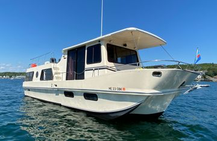

B-Scout Boat Guide · HLMN-38-CO
Holiday Mansion 38 Barracuda Coastal Coastal Houseboat Cruiser
1989–1997
The Holiday Mansion 38 Coastal Commander is a production coastal cruiser emphasizing interior volume, straightforward twin-engine propulsion and accessible used-market pricing. Layout and machinery vary by model, so individual configuration and condition remain important purchase factors.

- Length
- 38 ft
- Beam
- 12 ft
- Draft
- 2.17 ft
- Hull behaviour
- Planing
- Fuel
- Gasoline
- Propulsion
- Shaft
- Engine configuration
- Twin Inboard
- Boat family
- Houseboat
- Construction
- Fiberglass
Best for
- Inland and coastal cruising
- Buyers prioritizing space and value
- Owners comfortable maintaining older production systems
Trade-offs
- Operating cost reflects twin-engine planing performance
- Model-year changes can materially alter layout and systems
- Older examples require close survey attention to structure, tanks, wiring and machinery
Known concerns
- No model-specific concern has been promoted to B-Scout’s evidence threshold. This does not mean the model has no age-, condition- or hull-specific risks.
Inspection focus
- Verify moisture around deck hardware, windows, hatches and rail bases
- Inspect flybridge, arch, windshield and upper-deck penetrations for water intrusion and structural movement
- Inspect fuel, water and waste tanks plus hoses and fittings
- Inspect engines, transmissions or sterndrives, exhaust and cooling systems
- Review AC/DC wiring, shore-power equipment and documented electrical modifications
- Confirm steering, trim-tab and generator operation where fitted
Continue researching
Related boat models
Marine Trader 38 Double Cabin Double Cabin
38 ft · Displacement
Marine Trader 38 Sundeck Sundeck
38 ft · Semi-Displacement
Seahorse Coot 38 Steel Pocket Trawler
38 ft · Semi-Displacement
Shannon 38 SRD Schulz Reverse Deadrise
38 ft · Displacement
Nimbus 365 Coupé Sidewalk Coupé Cruiser
37.92 ft · Semi-Displacement
Bayliner 3870 / 3888 Motor Yacht Mid-Cabin Flybridge Motor Yacht
38.17 ft · Semi-Displacement
About this record
B-Scout preserves uncertainty: missing information remains unknown rather than being treated as a negative. Specifications and guidance describe the model record; individual boats can differ by year, equipment, refit and condition.